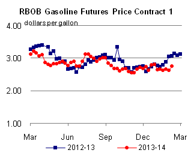

Released: February 12, 2014
Next Release: February 20, 2014
WTI–Brent Spread Projected to Average $11 per barrel in 2014
In the February Short-Term Energy Outlook (STEO), EIA projects that the discount of West Texas Intermediate (WTI) to North Sea Brent crude oil, which averaged $11 per barrel (bbl) in 2013, will average $11/bbl and continue at the same level in 2014 and 2015 (Figure 1). This discount reflects the economics of transporting and processing the growing production of light sweet crude oil in U.S. and Canadian refineries. EIA expects this forecast WTI discount to represent the Light Louisiana Sweet (LLS) discount to Brent minus a pipeline transport cost of approximately $4/bbl from Cushing, Oklahoma to the Gulf Coast.
{kind=link}
The WTI–Brent spread previously represented the cost of moving crude oil on marginal modes of transportation such as railroad and truck from the bottleneck at the Cushing, Oklahoma, hub. However, with adequate pipeline capacity to move crude from Cushing and growing tight oil plays to the Gulf Coast, Gulf Coast refiners have completely backed out imports of light sweet crude. As a result, lower crude prices, previously limited to the Midcontinent, have moved to the Gulf Coast, and they are reflected in the discount of LLS to Brent, which developed in the second half of 2013.
Continuing strong production growth combined with recent infrastructure adjustments will result in more light sweet crude flowing to the Gulf Coast in 2014 and 2015. EIA estimates U.S. crude oil production grew by more than 1 million barrels per day (bbl/d) in 2013, and the majority of this growth was light sweet crude oil from the Bakken, Permian, and Eagle Ford tight oil formations. In the latest STEO, EIA projects that U.S. crude oil production will grow by an additional 1.0 million bbl/d in 2014 and 0.8 million bbl/d in 2015 to reach an average production of 9.2 million bbl/d. Much of this production growth will be in the Gulf Coast or connected to the Gulf Coast region by pipeline.
There are three main recipients for incremental crude production that arrives on the Gulf Coast:
-
• U.S. Gulf Coast refineries
• Canadian refineries via foreign–flagged vessel for holders of export permits
• U.S. East Coast refineries via U.S.–flagged vessels
While shipping additional crude to U.S. and Canadian East Coast refineries, which are better suited to run light sweet crude, will provide an outlet for some production growth, most additional production will be processed in Gulf Coast refineries. Minor capacity increases will help accommodate some of this production growth, notably Kinder Morgan's 100,000-bbl/d condensate splitter in Galena Park, Texas, 50,000 bbl/d of which is scheduled to start up this quarter and the rest in 2015. However, much of the increased production will replace imports of medium and heavy crude, lightening the crude slate of Gulf Coast refiners. The ability to reduce imports further, especially along the Gulf Coast, to offset the expected growth in U.S. supply over the next two years could be limited by refinery partnerships and long-term supply contracts.
With more crude expected to move to the East Coast, and with Gulf Coast refineries expected to increase processing of light sweet crude, the discount of WTI to Brent will reflect the economics of transporting and processing the growing production of light sweet crude oil in U.S. and Canadian refineries. The forecast WTI discounts should continue to encourage rail shipments of light sweet crude from the Bakken formation. Increased volumes of North American crude oil are already moving to refineries in PADD 1 and eastern Canada. Favorable crude oil transportation economics could provide incentive to continue expanding rail capacity to the U.S. East and West coasts and to expand exports from the U.S. Gulf Coast to Canada. These expansions would provide additional outlets for rising U.S. and western Canadian crude oil production. However, even with additional volumes of domestically produced crude oil moving to the East and West coasts, light sweet crude oil supply to the U.S. Gulf Coast will still exceed take-away capacity in the near future.
As a result, larger price discounts for U.S. crude oil production versus alternate world crudes, such as greater WTI and LLS discounts to Brent, may be needed to encourage Gulf Coast refiners to process the increased supplies. Additionally, the price spread between light and heavy crudes in the United States will need to narrow to encourage displacing heavier crudes with increasing volumes of light crude.
Longer term, there are refinery investments to process more light crude and to increase condensate splitter capacity. Some of these upgrades are expected online later this year and into 2015, and they could provide enough capacity to absorb some of the coming supply increase. However, in the short term, WTI's discount to Brent will likely have to widen from its current levels as refinery crude runs decline during the spring maintenance season.
Gasoline and diesel fuel prices increase
The U.S. average retail price of regular gasoline increased two cents to $3.31 per gallon as of February 10, 2014, 30 cents lower than last year at this time. Prices decreased one cent on the East Coast to $3.35 per gallon, while increasing in all other regions of the nation. The Midwest price increased five cents to $3.28 per gallon. On the West Coast the price was $3.52 per gallon, up three cents from last week. The Rocky Mountain price gained a penny to $3.14 per gallon, and the Gulf Coast price was $3.09 per gallon, less than a penny more than last week.
The national average diesel fuel price was up three cents to $3.98 per gallon, 13 cents lower than last year at this time. Prices increased in all regions of the nation, with the largest increase on the East Coast, where the price increased five cents to $4.12 per gallon. The Midwest price was $3.97 per gallon, three cents higher than last week, and the Rocky Mountain and Gulf Coast prices both increased one cent, to $3.87 per gallon and $3.79 per gallon, respectively. The West Coast price was up a fraction of a penny to $4.00 per gallon.
Propane inventories fall
U.S. propane stocks fell by 2.9 million barrels to end at 27.9 million barrels last week, 24.5 million barrels (46.8%) lower than a year ago. Gulf Coast inventories decreased by 2.1 million barrels, and Midwest inventories dropped by 0.6 million barrels. East Coast inventories decreased by 0.2 million barrels, and Rocky Mountain/West Coast inventories decreased by 0.1 million barrels. Propylene non-fuel-use inventories represented 13.4% of total propane inventories.
Residential propane price continues to decrease, while heating oil price is virtually unchanged
Residential heating oil prices increased by less than 1 cent per gallon to remain at $4.24 per gallon during the period ending February 10, 2014. This is 8 cents per gallon higher than last year's price at this time. Wholesale heating oil prices increased by less than 1 cent per gallon last week, remaining at $3.44 per gallon.
The average residential propane price decreased by over 13 cents per gallon last week to nearly $3.76 per gallon, almost $1.45 per gallon higher than the same period last year. Wholesale propane prices decreased almost 10 cents per gallon to a price just shy of $2.61 per gallon as of February 10, 2014.
Text from the previous editions of This Week In Petroleum is accessible through a link at the top right-hand corner of this page.
 |
|||||||
| Retail Data | Change From Last | Retail Data | Change From Last | ||||
| 02/10/14 | Week | Year | 02/10/14 | Week | Year | ||
| Gasoline | 3.309 | Heating Oil | 4.243 | ||||
| Diesel Fuel | 3.977 | Propane | 3.757 | ||||
|  | |||||||||||||||||||||||||||
|
|||||||||||||||||||||||||||
| *Note: Crude Oil Price in Dollars per Barrel. | |||||||||||||||||||||||||||
| Stocks Data | Change From Last | Stocks Data | Change From Last | ||||
| 02/07/14 | Week | Year | 02/07/14 | Week | Year | ||
| Crude Oil | 361.4 | Distillate | 113.1 | ||||
| Gasoline | 233.1 | Propane | 27.901 | ||||